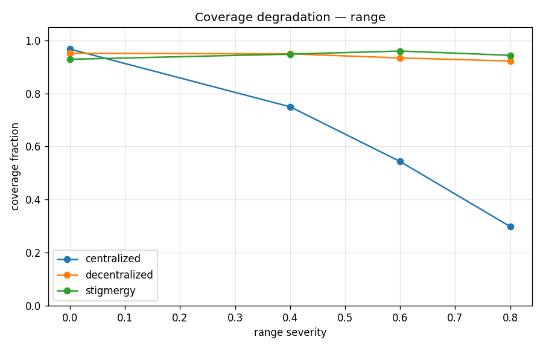
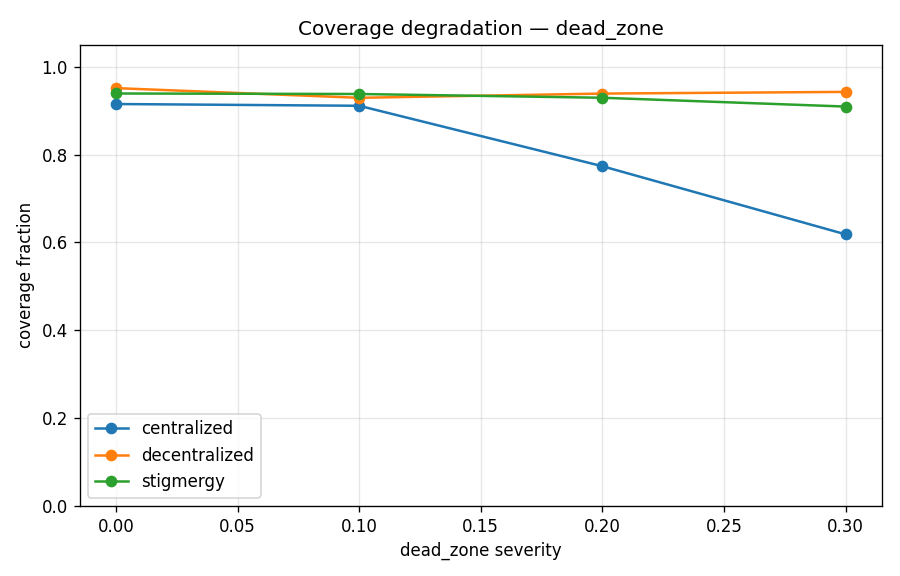
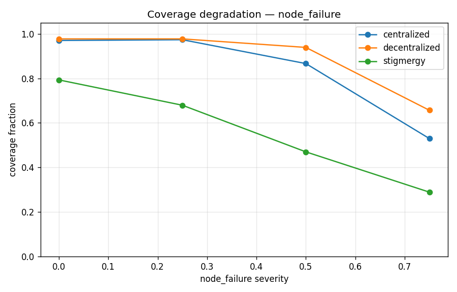
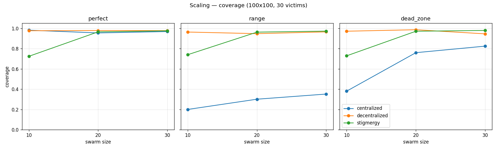
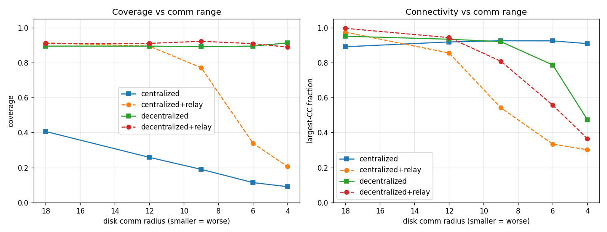
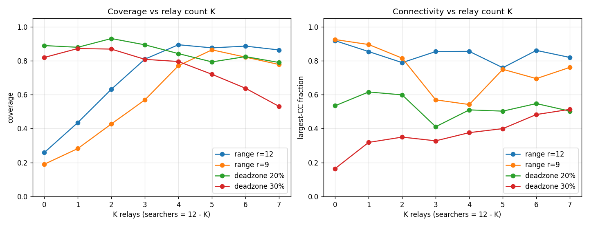

When earthquakes and fires sever radio links, which way of coordinating a drone swarm keeps finding survivors — and can a few relay drones rescue the ones that collapse? A simulation study of three coordination paradigms across six failure families.
It is not the amount of communication loss that decides success — it is the structure. Persistent, geographic loss is where centralized control dies and where decentralized and bio-inspired swarms win.
A lightweight in-browser port of the simulator. Pick a coordination strategy and a communication failure, then hit Run and watch coverage and connectivity evolve. Try Centralized + Range loss to see the collapse, then switch to Stigmergy on the same failure.
This browser demo is a simplified illustration of the methodology; the quantitative results below come from the full Python simulator (hundreds of Monte-Carlo trials).
Each strategy is a drop-in policy in a shared simulator with identical sensing, kinematics, and metrics — so differences are purely coordination, not implementation.
A base station aggregates everyone's map and assigns the nearest frontier to each drone. Optimal when connected — but a disconnected drone idles with no new orders.
Collapses under geographic lossNo base station. Drones merge maps pairwise with in-range neighbors (one hop per step) and each plans toward its own nearest frontier. Degrades gracefully.
Best all-rounderNo messaging at all. Drones leave a digital "explored" pheromone in the shared environment and move toward the faintest cells. Coordination is comms-free.
Comms-loss specialist · needs densityCoverage at mission completion, mean over 10 seeds. AUC = baseline-normalized resilience (1.0 = perfectly flat under degradation).
| Failure family | Centralized | Decentralized | Stigmergy | Winner |
|---|---|---|---|---|
| Packet loss (5–20%) | 1.029 | 0.969 | 0.970 | Centralized* |
| Range degradation | 0.720 | 0.991 | 1.018 | Stigmergy |
| Dead zones (10–30%) | 0.893 | 0.986 | 0.991 | Stigmergy |
| Node loss — random | 0.890 | 0.932 | 0.710 | Decentralized |
| Node loss — targeted hubs | 0.865 | 0.867 | 0.693 | Cent ≈ Dec |




Dedicate a few drones as repositioning multi-hop relays that bridge the base station to stranded searchers. They restore most of the lost coverage — but only with enough relays to span the gap.
| Centralized config | Rcomm=18 | Rcomm=12 | Rcomm=9 |
|---|---|---|---|
| No relays | 0.406 | 0.259 | 0.190 |
| Adaptive relays (K=4) | 0.912 | 0.894 | 0.771 |


No single coordination paradigm is best everywhere. The right choice depends on the dominant failure, the agent density, and the terrain.
Transient packet loss hurts no one; persistent geographic loss breaks centralized control. Engineer for where links fail, not just how often.
Never the outright loser in any scenario and scales with near-linear speedup — the strongest all-around choice.
Immune to comms loss, but needs a minimum agent density and can't re-task survivors after node loss.
A small adaptive relay team rescues centralized control under range loss — sized to the gap, and routed around dead zones, not through them.
Methodology: a lightweight 2.5-D Python simulator with pluggable communication-failure models and multi-hop routing; a portable ROS 2 / Gazebo backend mirrors the same strategies for hardware transfer. Every number on this page is reproducible from the experiment modules in the repository.